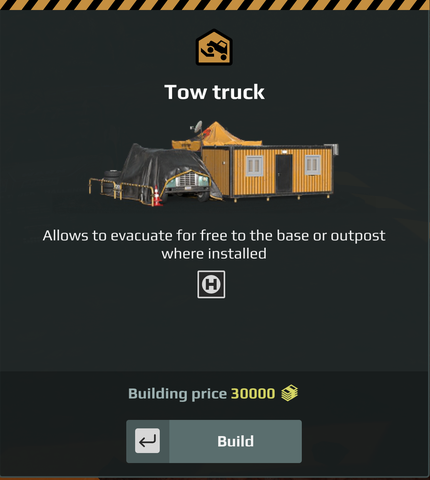
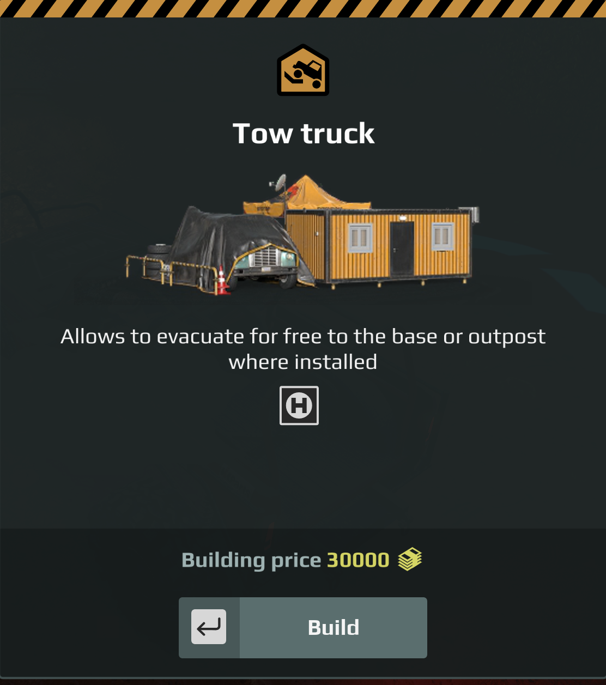
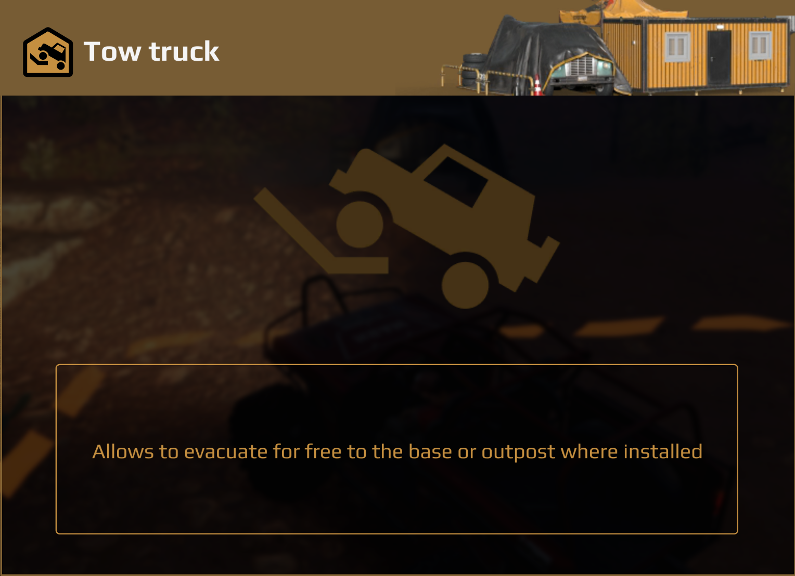
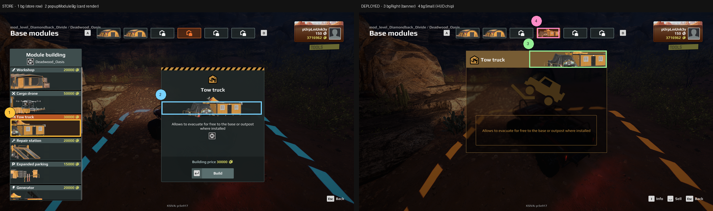
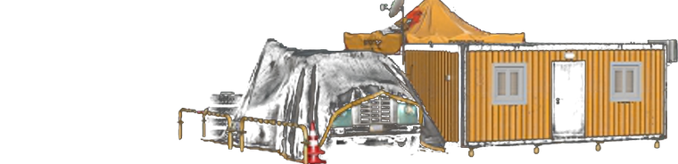
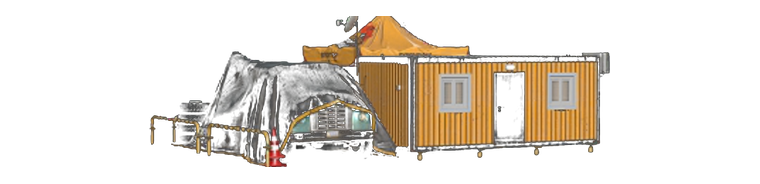
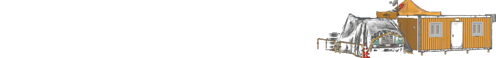
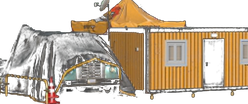

Tow truck#

Recovers a stranded truck back to the base.
In game#
The purchase card. This is what a player sees before buying.

Below the description it shows: A single H badge.
That is not an image and not a field you set. It is drawn by the engine for ZonePropertyTowTruck. A custom module gets this row only by using the same zone property type; there is no way to choose which glyphs appear.
The module once built. This is the panel the player opens at the base.

If your module does not produce a panel like this one, it is not configured correctly. The numbers here and the numbers on the purchase card are the same values, read from the same place.
Documented for custom modules
Saber’s own documentation lists this module’s zoneProperty and says these props exist to configure CUSTOM FOB modules. Use the property named below, not one you inferred from a symbol name.
Identity#
zoneProperty.moduleId |
TOW_TRUCK |
| Zone property | ZonePropertyTowTruck |
| Its members | moduleId |
Models#
| Slot | Model |
|---|---|
modelId (main base) |
models_fob_module_tow_truck |
modelIdAdditional (outpost) |
models_fob_module_small_tow_truck |
modelAnimated |
— none ships |
modelAdditionalAnimated |
models_fob_module_small_tow_truck_objective |
Artwork: every image slot#
Six images appear per module, in six different places. They are separate images, not one picture reused.
| Where you see it | Field | Falls back to | Symbol for this module |
|---|---|---|---|
| Store sidebar, the list row | bg |
moduleSlotContent |
moduleEvacuator |
| Store card, when you select it | popupModuleBg |
(none) | moduleEvacuatorPopup |
| Right card, when the module is used | bgRight |
moduleSlotContentRight |
moduleEvacuatorRight |
| HUD strip of deployed modules | bgSmall |
moduleSlotContentSmall |
moduleEvacuatorSmall |
| On the map | iconMap40 |
(none) | (none ships) |
| Trade panel glyph | iconTrade |
(none) | (none ships) |
How much of that is confirmed
The fallbacks are the engine schema defaults, so they are fact. The symbols in the last column are confirmed to exist in the game’s UI bundle. Which field each one is wired to is inferred from its suffix and has not been verified against a module proven to work. Treat the last column as a strong lead, not as settled.
Replacing them#
There is a template for this
expeditions-module-art-template.zip — the four canvases at the right sizes, named correctly, with the cropped and covered areas marked.
Three of the background images may be your own PNGs. Ship them at
ui/textures/<name>.png and name them in the descriptor without the
folder and without .png. These are the sizes mods on disk ship:
ui/textures/mymodule_bg.png -> "bg": "mymodule_bg" 380 x 92
ui/textures/mymodule_right.png -> "bgRight": "..." 760 x 90
ui/textures/mymodule_small.png -> "bgSmall": "..." 124 x 52
⛔ The two icons may not be your own files. iconMap40 and iconTrade
take a symbol from the game’s bundle; a PNG in an icon field does not
render. Borrow a vanilla symbol instead.
The other five image fields
icon20, icon40, iconModuleBg, tradeArrowsSpecialIcon and
uiDescTradeHeaderIcon are unset on every module examined, and take
symbols only.
popupModuleBg can’t be your own PNG
The game loads mod PNGs only for bg, bgSmall and bgRight. A mod
PNG named in popupModuleBg draws the broken-image placeholder, a
yellow square with a red mountain; that was seen in game. Set it to
"" or to a vanilla symbol such as the one in the table above. The
module checker now reports a custom PNG here as an error.
The four background images, rebuilt#
Where each one is drawn, on the real screens:

The originals live inside the game’s UI bundle and cannot be extracted, so these are rebuilt from in-game captures. Every one below is a transparent PNG at the slot aspect — the same thing you have to author. The game supplies the brown row, the slate card and the tan bar; your file supplies only the model.
These are FOUR separate images, not one image reused
Do not render your model once and drop the same picture into all four fields. Across the vanilla set the four differ in crop, framing and left-to-right orientation.
Three of the twelve are flipped in the store row: Expanded parking, Cargo drone and Service station. The other nine run the same way in both slots.
Those three have one thing in common. The feature that identifies the module sits on the LEFT of the purchase card — the parking barrier and cabinet, the drone itself, the hoist gantry — and the store row clips its left edge. Flipping is what saves that detail from the crop.
So the rule is: flip when the detail that identifies your module would otherwise be cropped away. Decide it per slot by looking at what survives, not by reusing one render four times.
The slot sizes below are measured, not quoted: 762 x 184, 762 x 184, 1530 x 184 and 248 x 104 in a 2160p frame, which is exactly the documented 380 x 92, 380 x 92, 760 x 90 and 124 x 52 doubled.
Why bg shows the whole model when the game clips it
In game the store row cuts off the left of this art. That is the game drawing it, not your file — you author the complete model and let the row clip. The example below is the complete image.
bg — 380 x 92 — the store row and the sell dialog. Fills the row height and clips off the left edge.

This store-row art runs the same way as the purchase card.
popupModuleBg — 380 x 92 — the purchase card. The whole model, nothing cropped.

bgRight — 760 x 90 — the banner above the module card when it is in use. The artwork is aligned to the RIGHT; the icon and name sit on the tan bar to its left.

bgSmall — 124 x 52 — the HUD strip of deployed modules. The whole module, scaled so it just fills the chip and touches its edges. Every vanilla chip is framed this way. Zooming in past that shows only a corner of the model and reads as far too big.

Composition
Vanilla rows are left-anchored, fill the row height, and clip off the left edge. A centred picture with margins reads as too small and floats. Match the framing, not just the pixel size.
Building your own#
Saber’s documentation names ZonePropertyTowTruck for this module.
No custom module built on it has been tested in game yet. This is Saber’s documented setting, not a proven one.
Give it a moduleId no other mod uses — your own mod name works.
See Module descriptor reference for the full field list.